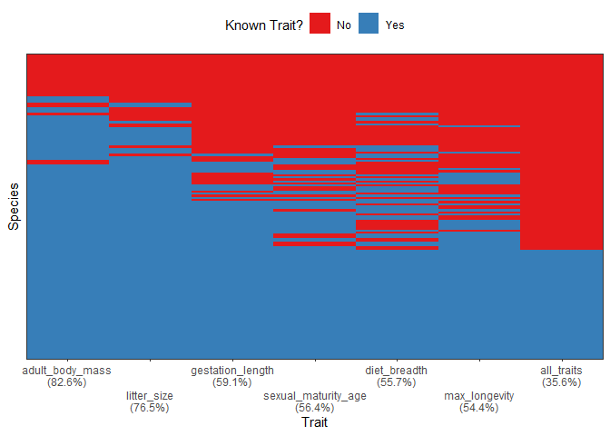
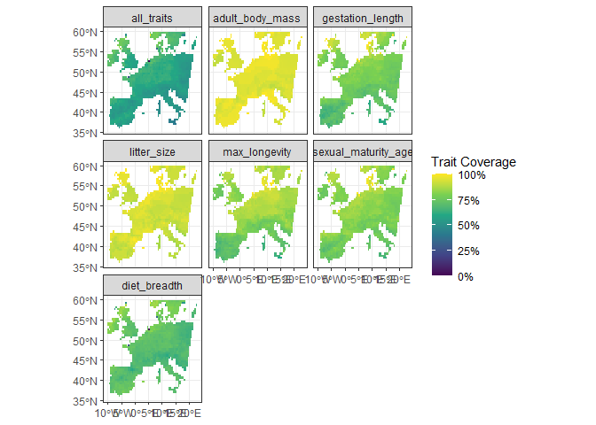

Overview
The package funbiogeo aims to help users with analyses in functional biogeography (Violle et al. 2014) by loading and combining data, computing trait coverage, as well as computing functional diversity indices, drawing maps, correlating them with the environment, and upscaling assemblages.
It is aimed at first-timers of functional biogeography as well as more experienced users who want to obtain quick and easy exploratory plots.
Main Features
funbiogeo offers:
- Standardized functions to filter and select your data for further analyses,
- Pleasing default diagnostic plots to visualize the structure of your data,
- Extensive documentation (multiple vignettes, well-documented functions, real-life example dataset) to guide you through functional biogeography analyses,
- Nice default plotting functions using outputs from functional diversity packages (
betapart,fundiversity,hillR,mFD, etc.), - Automated standardized report that provide analyses and plots of your data,
- Functions to easily “upscale” your data to coarser spatial resolutions.
Citation
For the moment funbiogeo doesn’t offer a companion paper. But if you happen to use it in your paper you can cite the package through:
Casajus N, Grenié M (2022). funbiogeo: Functional Biogeography Analyses. R package version 0.0.0.9000, https://github.com/frbcesab/funbiogeo.
or the BibTeX version:
@Manual{,
title = {funbiogeo: Functional Biogeography Analyses},
author = {Nicolas Casajus and Matthias Grenié},
note = {R package version 0.0.0.9000},
url = {https://github.com/frbcesab/funbiogeo},
}Installation
For the moment funbiogeo is not on CRAN but you can install the development version from GitHub as follow:
# install.packages("remotes") # Run this line if 'remotes' pkg is not installed
remotes::install_github("FRBCesab/funbiogeo")First steps
This section will show you some useful functions from funbiogeo. For a longer introduction please refer to the “Get started” vignette.
The package contains default example data named species_traits, site_species, and site_locations. You can for example visualize to completeness of your trait dataset using the fb_plot_species_traits_completeness() function:
fb_plot_species_traits_completeness(species_traits)
One other useful visualization is to see the trait coverage of each trait across all sites, using the function fb_map_site_traits_completeness():
fb_map_site_traits_completeness(site_locations, site_species, species_traits)
See more features of funbiogeo in the vignettes of the package
Longer Documentation form
funbiogeo provides four vignettes to explain its functioning:
- A “Get started” vignette that describes its core features and guide you through a typical analysis.
- A vignette on all diagnostic plots provided in the package, which details how to use each plotting function and how to interpret their output.
- A vignette on formatting your data to the needs of
funbiogeo, which shows you the use of specific functions. - And a specific vignette on upscaling which explains how to aggregate automatically your data to coarser grain and use it in further analyses.
Code of Conduct
Please note that the funbiogeo project is released with a Contributor Code of Conduct. By contributing to this project, you agree to abide by its terms.
References
Violle C, Reich, PB Pacala SW, et al. (2014) The emergence and promise of functional biogeography. Proceedings of the National Academy of Sciences, 111, 13690–13696. DOI: 10.1073/pnas.1415442111